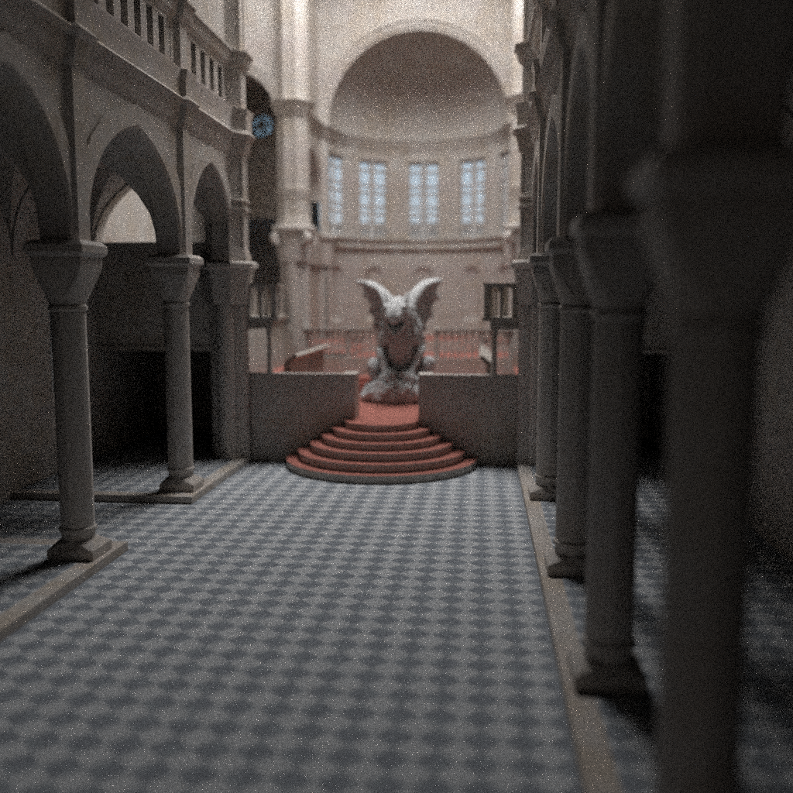
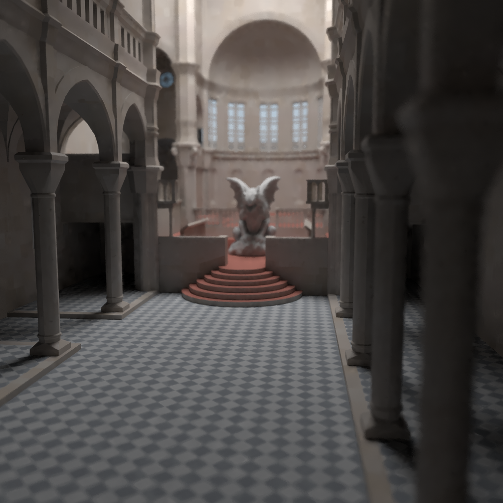
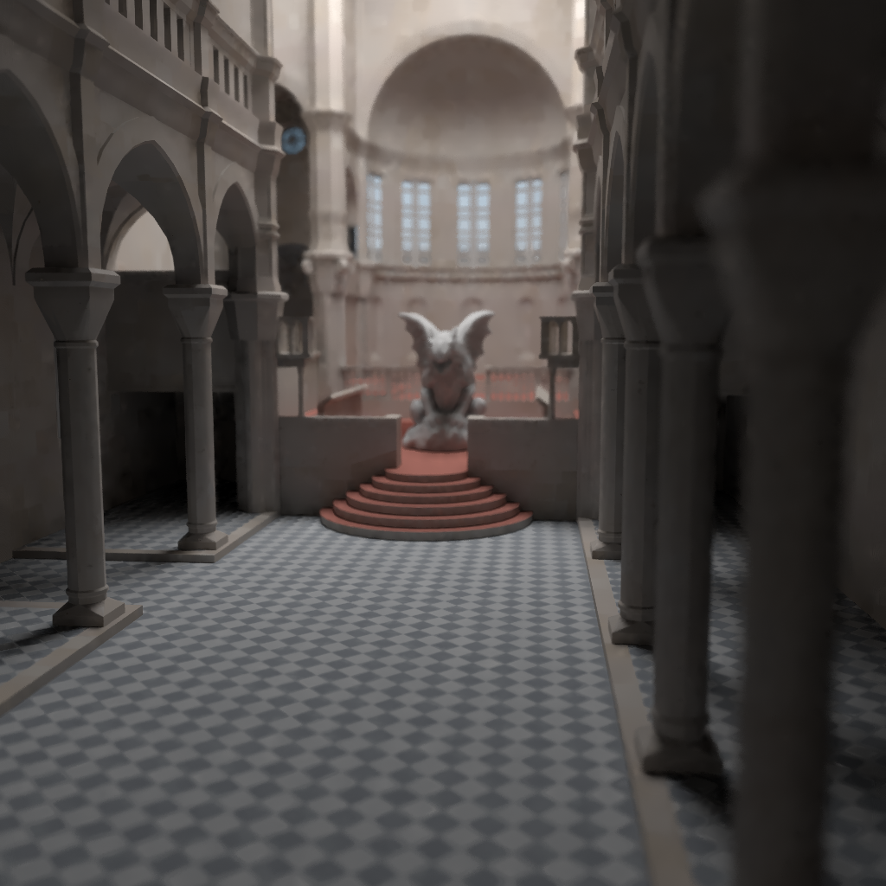
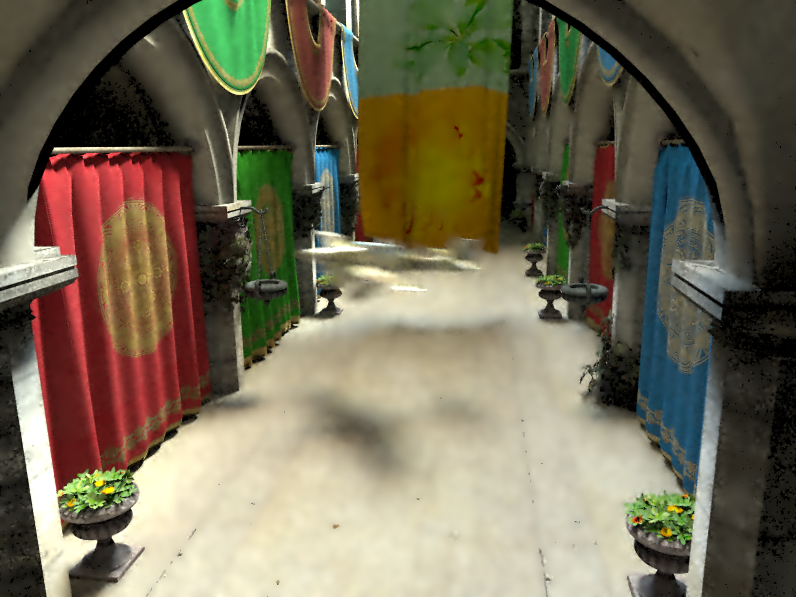
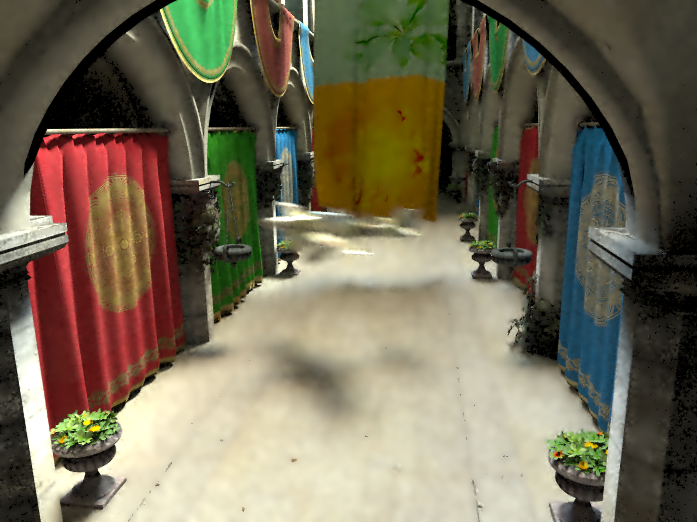

SURE-based Optimization for
Adaptive Sampling and Reconstruction
Tzu-Mao Li
Yu-Ting Wu
Yung-Yu Chuang
National Taiwan University
Interactive Equal-Time Comparison
Image viewer is borrowed from this page.
All results are generated on a machine with Intel Xeon E5420 CPU (2.5 GHz) and 32-GB RAM, using 8 threads.
Scene (click on the image thumb to change comparison)
MSE:0.029946" width="800" height="800" style="display: none;">
[Rousselle et al. 2011]
MSE:0.002070" width="800" height="800" style="display: none;"> MSE:0.001489" width="800" height="800" style="display: none;">
MSE:0.002070" width="800" height="800" style="display: none;"> MSE:0.001489" width="800" height="800" style="display: none;">
![Greedy Error Minimization<br>[Rousselle et al. 2011]<br>MSE:0.018352](images/Town/gem.png) MSE:0.018023" width="800" height="600" style="display: none;">
MSE:0.018023" width="800" height="600" style="display: none;">
 [Rousselle et al. 2011]
[Rousselle et al. 2011]